1/23 - 1/24
横須賀ハッカソン＠ヴェルクよこすかレポート
1/23 - 1/24
横須賀ハッカソン＠ヴェルクよこすかレポート
1/23（土）
1月23日（土）〜1月24日（日）にかけて横須賀市大会が横須賀市勤労福祉会館で開催されました。
積雪による交通機関の混乱が予想される報道を受け、予定より少なくはなりましたが、５名の方々が参加してくれました。
開会の挨拶の後、今回のテーマであるカレーとそれにまつわる横須賀市の関係などについて、横須賀市経済部から説明をしました。
その後、ヨコスカバレー構想実現委員会の相澤さんから、さらにカレーと横須賀の歴史について説明をしていただき、みんなでよこすかポートマーケットや三笠公園を巡るフィールドワークに行きました。
フィールドワーク後屋外で解散し、みなさんに好きなカレー屋さんで昼食をとってもらいました。
午後はアイデアソンを開催。簡単な発表会を行った後、出たアイデアに合わせて次の日にハッカソンを行うチームを２つ作りました。
司会進行はヨコスカバレー実現委員会のメンバー、相澤さん
横須賀市経済部千葉係長から、横須賀とカレーの歴史について説明
フィールドワーク（地元の野菜やお土産ものが揃うよこすかポートマーケット）
フィールドワーク（三笠公園の記念艦三笠）
アイデアソンの様子
1/24（日）
二日目には７名に参加していただき、冒頭から開発にとりかかりました。
お昼前に、前日同様フィールドワークに出て、ドブ板通りやヴェルニー公園を見学し、カレーを堪能してもらいました。
午後は引き続き開発を行い、最終的にそれぞれの成果を発表してもらいました。
アプリ開発中
横須賀のおいしいグルメ（ヨコスカネイビーバーガー、ヨコスカチェリーチーズケーキ、よこすか海軍カレー）を食べたいけど、カロリーと量が気になる…
だったら歩いてお腹をすかせようという発想に、市内周遊とグルメの店舗めぐりをあわせたアプリ開発の企画。
アプリでは設定したコースを歩いた距離や消費カロリー等のデータ表示にクーポン機能を連動。
アプリ名：スカレーウォーカー
駆逐艦や軽巡洋艦、重巡洋艦など擬人化したキャラクターを育成するシミュレーションゲーム「艦隊これくしょん」が話題になっている。
今回は男性がターゲットではなく、オタク系女子をターゲットにしたアプリ開発の企画。
オタク系女子はハマったものに多額のお金をつぎ込む傾向があるため、横須賀の軍艦を擬人化したイケメン男子のキャラクターを作り、そのキャラクターがアプリを利用する女子をデート気分にさせて、横須賀へ誘導し、市内周遊やグルメ店舗での食事で消費活動も促す。
消費活動を促す仕掛けとしてクーポン機能と連動させる。
アプリ名：華麗な彼とカレーな思い出
審査員のみなさんによる厳正な審査の結果、優勝は「華麗な彼とカレーな思い出」、準優勝は「スカレーウォーカー」に決定しました。
Aチームのみなさん。おめでとうございます！
Bチームのみなさん。おめでとうございます！
ファシリテーターとして参加いただいたFandroid EAST JAPANの原さんからの総評